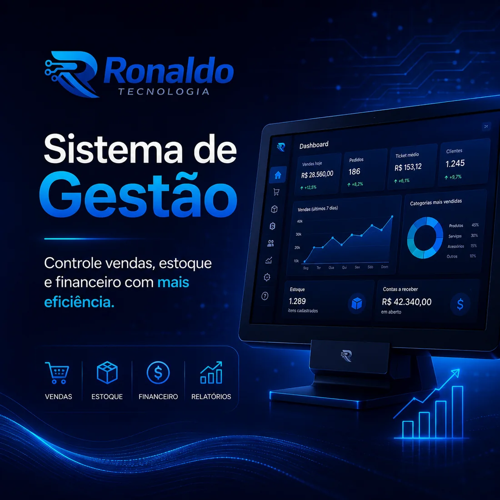
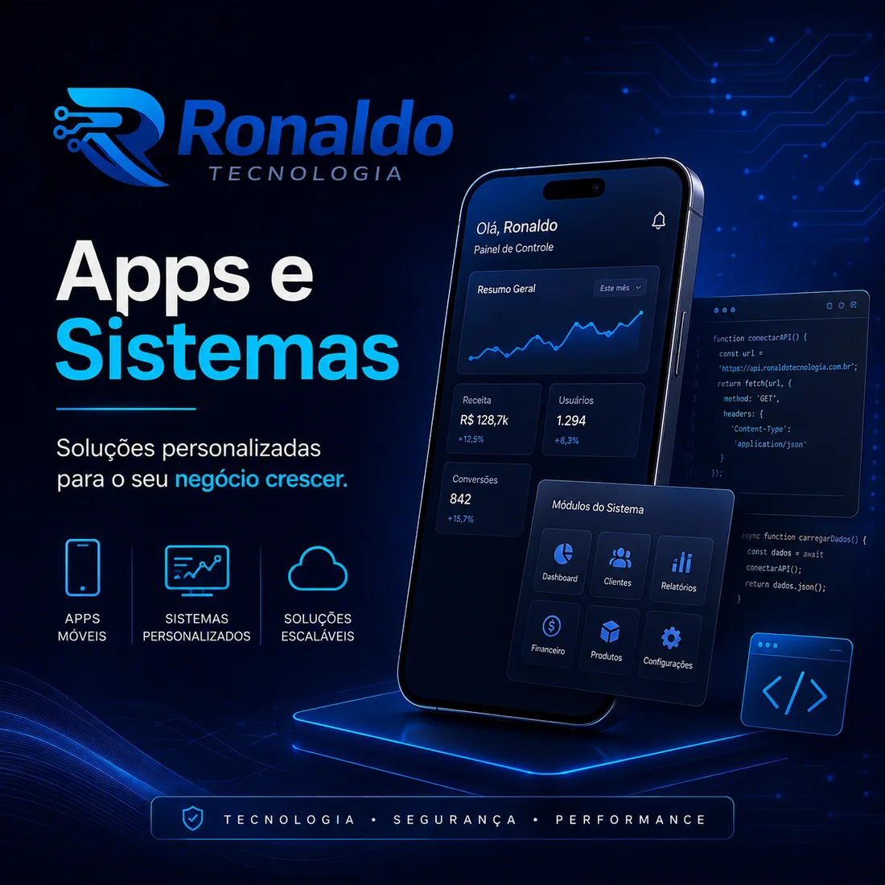

01 / físico + digital
Robótica & automação
Automação de rotinas, dispositivos e processos para reduzir tarefas repetitivas e dar mais ritmo à operação.
Ver possibilidadesRonaldo J. transforma problemas técnicos em operações mais conectadas: da robótica e automação de sistemas às redes, apps, sites e câmeras que avisam você no canal certo.
Uma base técnica para criar, conectar e acompanhar o que faz sua operação funcionar melhor — com projetos claros e evolução por etapas.
Automação de rotinas, dispositivos e processos para reduzir tarefas repetitivas e dar mais ritmo à operação.
Ver possibilidades
Integração de etapas, dashboards e sistemas sob medida para transformar informação espalhada em decisão.
Conhecer o TorgeAnálise autorizada de redes, rastreio de falhas e investigação técnica para entender o que está acontecendo.
Descrever cenárioFerramentas, automações e aplicativos para colocar uma solução prática na mão da equipe ou do cliente.
Ver aplicaçõesSites rápidos, responsivos e com presença profissional para transformar atenção em conversa.
Criar presença
Interfaces que aproximam cliente, equipe e processo — do primeiro clique ao próximo alerta.
Tirar do papelAutomação de câmeras com alertas inteligentes para WhatsApp, Telegram e Discord.
Conectar alertasConfiguração de câmeras, redes e soluções com acompanhamento próximo para manter tudo no lugar.
Falar com RonaldoO R1tech Radar varre o Google Maps pelo nicho e pela cidade que você escolher, separa as empresas que ainda não têm site e organiza tudo num CRM simples: quem foi encontrado, quem já foi contatado e em que etapa cada lead está.
Padaria, borracharia, loja, salão ou outro comércio local — explore alguns exemplos e imagine o seu.
Se a sua rotina envolve equipamentos, sistemas, dados ou alertas, a tecnologia precisa conversar com o dia a dia — não criar mais uma camada de complicação.
Planos mensais para quem quer centralizar gestão, rotina comercial e indicadores com implantação e suporte próximos.
O essencial para organizar a operação inicial.
Para profissionalizar a rotina comercial.
Mais recursos para uma operação em evolução.
O objetivo não é encher a operação de ferramentas. É construir o fluxo certo, explicar sem complicar e deixar a solução pronta para acompanhar o próximo passo.
Conte o contexto. Ronaldo J. ajuda a encontrar o caminho mais simples para começar.